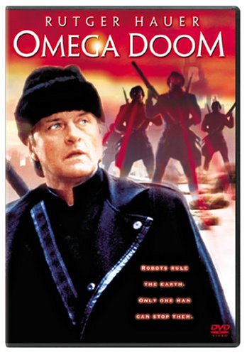

Movie review by : SFAM
Year : 1996
Directed by : Albert Pyun
Written by : Albert Pyun, Ed Naha
Degree of Cyberpunk visuals : Low
Correlation to Cyberpunk themes : Medium
Rating : 5/10
Key cast members :

Overview: In this strange apocalyptic tale, most all the humans have died out and now two different groups of androids spend their time killing one another. Unfortunately it appears as if the humans are returning, so they need to find weapons to protect themselves. In one western town, these two groups have reached a stalemate while looking for a hidden "treasure" stash of guns and ammo. Along comes the lone warrior, Bruce Willis (Last Man Standing), er, I mean Clint Eastwood (Fistfull of Dollars), er, I mean Toshirô Mifune (Yojimbo), er, I mean Rutger Hauer - only this time he's a cross-over android with parts from both rival robot types. Did I mention that he's fast with his whatever the fuck that gun-looking thing is at his side?
If you know any of these movies, you know the plot here. Some parts are done decently, but others could really be improved. In any event, Omega Doom wins on low-budget style points while it loses out on about 10 minutes of missing explanations. Why do the androids need water? Why do they breath air? Why do they both fear death but seem to be forced to follow their programming? More importantly, why can androids ignore their programming when their emotions are heightened in key scenes? Is this the same reason that my computer uses to crap out when I'm under an intense deadline?
The Bottom Line: Not a high quality picture, but maybe not quite as bad as others are saying. There are some interesting fighting scenes, and I find western cyborg films appealing. And truly, for as low budget as this movie was, Pyun produced at least a semi-watchable product.